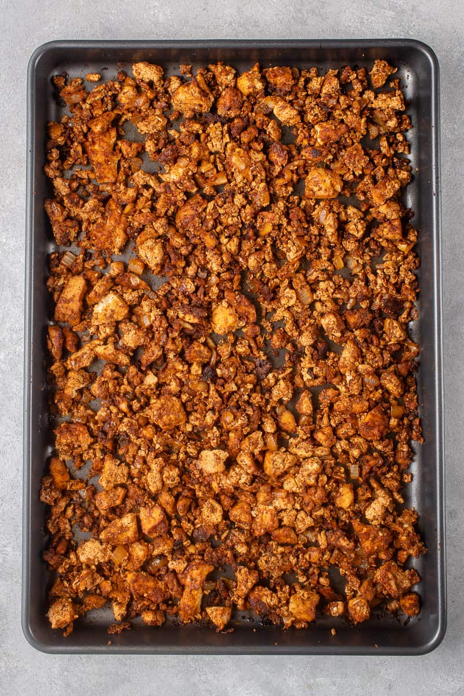

Sheet Pan Tofu Crumbles

Description
These savory tofu crumbles make an excellent meat substitute. Add to pasta sauce, taco filling, or serve with rice and veggies!
Ingredients
- 2 blocks (350g each) extra-firm tofu, drained
- 1/4 cup nutritional yeast
- 2 tablespoons olive oil
- 2 tablespoons tamari
- 1 teaspoon garlic powder
- 1 teaspoon onion powder
Steps
- Preheat your oven to 425F and line a sheet pan with parchment paper.
- Crumble the blocks of tofu into small bits onto the sheet pan.
- Add all the other ingredients on top of the tofu and mix everything together by hand
- Spread the tofu mixture evenly across the sheet pan and bake for 40 minutes, stirring halfway through, until lightly golden.
Adapted from It Doesn't Taste Like Chicken's Baked Tofu Bites.
Home